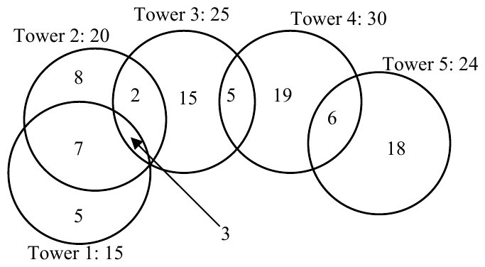

ICPC World Finals 2005 · Problem J
Telephone poles are part of an outdated technology. Cell phones nowadays allow us to call whoever we want, wherever we want, independent of any wire. There is one problem — without a service tower nearby a cell phone is useless.
In the absence of hills and mountains, a service tower will provide coverage for a circular area. Instead of planning where to place the wires, a wireless telephone company has to plan where to build its service towers. Building the towers too far apart causes holes in the coverage and increases complaints. Building the towers too close to each other results in large areas covered by more than one service tower, which is redundant and inefficient.
International Cell Phone Company is developing a network strategy to determine the optimal placement of service towers. Since most customers have replaced their old wired home phones by cell phones, the strategy for planning service towers is therefore to cover as many homes of customers as possible.
The figure below shows the service areas for the five towers ICPC's strategic department planned to build this year. Tower 5 will serve 24 customers, 6 of which are also served by tower 4. Towers 1, 2 and 3 have a common service area containing 3 customers.

Shortly after the plans for these five towers had been published, higher management issued a stop on all tower building. Protesting customers forced them to weaken this decree, and allow the building of three towers out of the five planned. These three towers should serve as many customers as possible, of course. Finding the best possible choice for the towers to build is not trivial (the best choice in this case is towers 2, 4 and 5, serving 68 customers).
You must write a program to help ICPC choose which towers to build in cases like these. If several choices of towers serve the same number of customers, choices including tower 1 are preferable. If this rule still leaves room for more than one solution, solutions including tower 2 are preferable, and so on.
The input file contains several test cases. The first line of each test case contains two positive integers: the number n (n ≤ 20) of towers planned, and the number of towers to be actually built. The next line contains n numbers, each giving the number of customers served by a planned tower. (The first number refers to the first tower, and so on.) No tower serves more than a million people. The next line contains the number m (m ≤ 10) of common service areas. Each of the next m lines contains the description of a common service area. Such a line starts with the number t (t > 1) of towers for which this is a common service area, followed by the t numbers of the towers. The last number on the line is the number of customers in the common service area. The last line of the input file consists of the two integers 0 0.
For each test case, display the number of customers served and the best choice for the location of the towers. Follow the format of the sample output.
5 3 15 20 25 30 24 5 2 1 2 7 3 1 2 3 3 2 2 3 2 2 3 4 5 2 4 5 6 5 3 25 25 25 25 25 4 2 1 2 5 2 2 3 5 2 3 4 5 2 4 5 5 5 3 25 25 25 25 25 0 0 0
Case Number 1 Number of Customers: 68 Locations recommended: 2 4 5 Case Number 2 Number of Customers: 75 Locations recommended: 1 3 5 Case Number 3 Number of Customers: 75 Locations recommended: 1 2 3